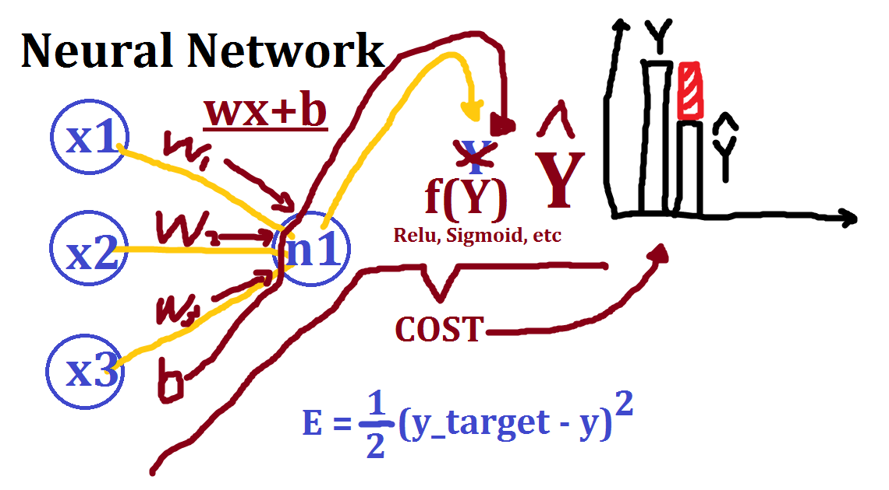

class: center, middle # 딥러닝 프롬 스크라치 ### 06. SGD와 그 후예들 --- ### 오늘 할것 - SGD가 뭔가 - SGD와 관련된 것들에는 뭐가 있나 - 그 외의 학습 관련 기술들은 없나 - 파이썬이 없으니 JavaScript로 실습 에 대하여 알아보도록 하겠습니다 --- ### 추천 TED 강의 (이미지 클릭!) <a href="https://www.ted.com/playlists/310/talks_on_artificial_intelligen"><img src="neural_network00.png" height="505" width="1000"></img></a> --- ### SGD(Stochastic Gradent Descent)란 무엇인가? </img> --- ### SGD(Stochastic Gradent Descent)란 무엇인가? --- ### SGD(Stochastic Gradent Descent)란 무엇인가?